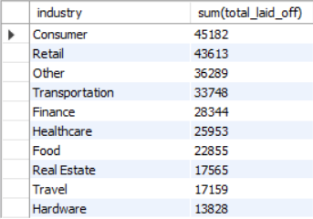

SQL Layoffs Data Analysis
End-to-end data cleaning and exploratory data analysis performed exclusively using SQL to uncover global layoff trends across companies, industries, countries, and time.
📘 Project Overview
This project analyzes a global layoffs dataset using pure SQL. The workflow includes
deduplication, standardization, null handling, and exploratory analysis to derive
meaningful business insights.
📂 Dataset Description
The dataset contains company-level layoff records including company name, industry,
total and percentage layoffs, country, funding stage, date, and funds raised.
Raw data required extensive cleaning due to duplicates, missing values, and
inconsistent formatting.
🛠 Tools Used
MySQL • SQL Window Functions • Aggregations • Joins
📊 Exploratory Data Analysis (SQL)
Top 10 Companies by Total Layoffs

SELECT company, SUM(total_laid_off) AS total_layoffs
FROM layoff_staging2
GROUP BY company
ORDER BY total_layoffs DESC
LIMIT 10;
Identifies companies contributing the highest number of layoffs.
Industry-wise Layoffs
SELECT industry, SUM(total_laid_off)
FROM layoff_staging2
GROUP BY industry
ORDER BY 2 DESC;
Shows which industries were most affected by layoffs.

Country-wise Layoffs

SELECT country, SUM(total_laid_off)
FROM layoff_staging2
GROUP BY country
ORDER BY 2 DESC;
Highlights countries with the highest number of layoffs.
Year-wise Layoff Trends

SELECT YEAR(date) AS year, SUM(total_laid_off)
FROM layoff_staging2
GROUP BY YEAR(date)
ORDER BY year DESC;
Analyzes how layoffs changed over time.
🔍 Key Insights
- Layoffs are concentrated among a small set of companies.
- Technology-driven industries dominate layoff counts.
- The United States records the highest layoffs globally.
- Layoff activity spikes in specific years.